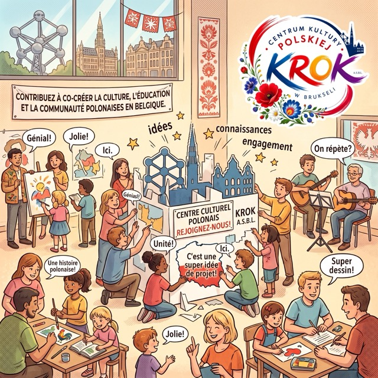
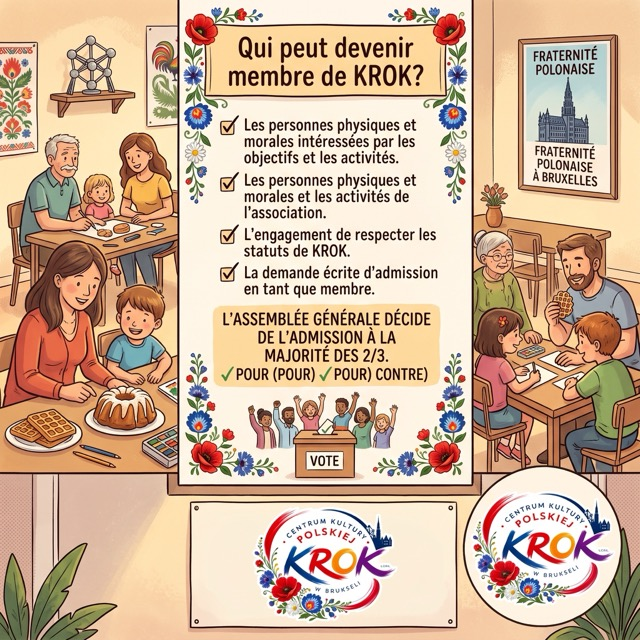
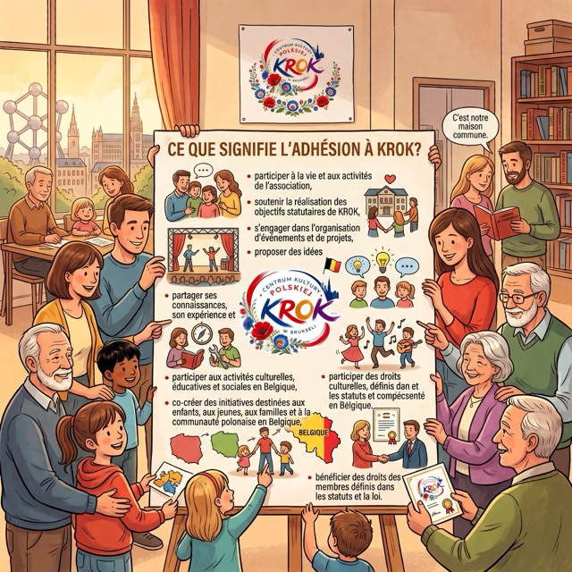
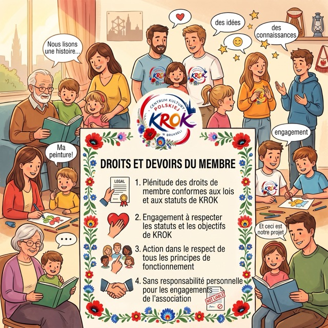
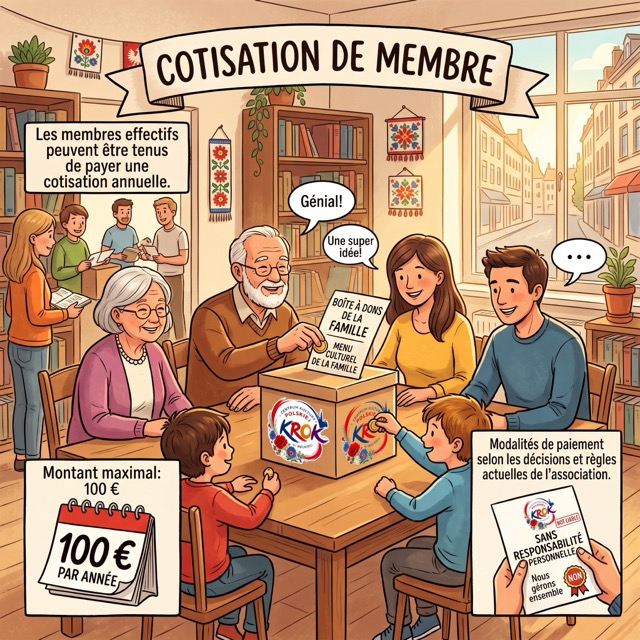
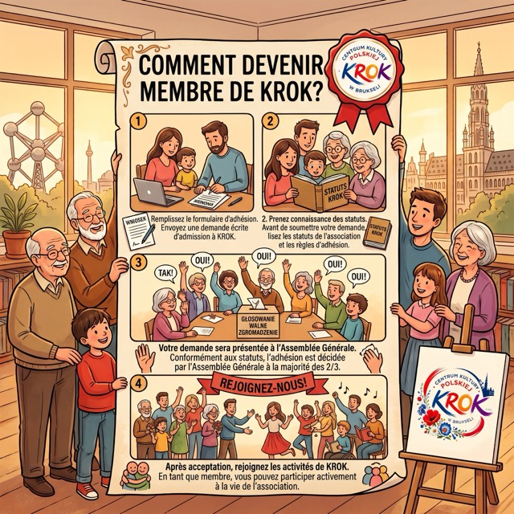

Rejoignez KROK et participez à la création de la culture polonaise, de l'éducation et de la communauté en Belgique.
Devenir membre du CENTRE DE LA CULTURE POLONAISE KROK ASBL, c’est l’opportunité de participer activement à la vie de l’association, de soutenir ses objectifs et de co-créer des initiatives destinées aux enfants, aux jeunes, aux familles et à l’ensemble de la communauté polonaise en Belgique.
Les membres de KROK constituent le cœur de notre organisation. C’est grâce à leur engagement, à leurs idées, à leur savoir-faire et à leur expérience que nous pouvons développer de nouvelles actions culturelles, éducatives et citoyennes.

Peut devenir membre de KROK toute personne physique ou morale qui :
Conformément aux statuts, l’admission d’un nouveau membre est décidée par l’Assemblée générale à la majorité des deux tiers des voix.
Les membres fondateurs sont membres effectifs de l’association.

L’adhésion donne l’opportunité de prendre part activement aux activités de l’association et de bénéficier des droits reconnus aux membres conformément aux lois en vigueur et aux statuts de KROK.
En tant que membre, vous pouvez notamment :

Les membres de KROK jouissent de l’ensemble des droits qui leur sont conférés par la législation en vigueur et les statuts de l’association.
Chaque membre s’engage à respecter les statuts et à agir dans le respect des buts et principes de fonctionnement de KROK.
Les membres ne contractent aucune responsabilité personnelle quant aux engagements pris au nom de l’association.

Les membres effectifs peuvent être tenus de s’acquitter d’une cotisation annuelle.
Conformément aux statuts, le montant maximal de la cotisation est fixé à 100 € par an.
Le montant effectif de la cotisation ainsi que ses modalités de paiement sont déterminés conformément aux décisions et règlements en vigueur au sein de l’association.

Tout membre peut à tout moment démissionner de l’association en adressant sa démission par écrit à l’organe d’administration de KROK.
Les statuts précisent également les dispositions relatives à la perte de la qualité de membre et à l’exclusion.
ENSEMBLE, NOUS CRÉONS KROKAucune expérience préalable dans le milieu associatif n’est requise. Vous pouvez apporter votre temps, votre savoir-faire, vos idées, votre expérience ou vos compétences.
Chaque forme d'engagement compte.
Un pas, mille possibilités.
Remplissez le formulaire d'adhésion et commencez votre parcours avec KROK.